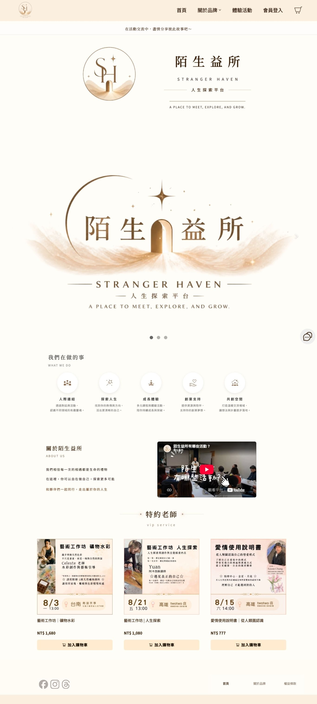
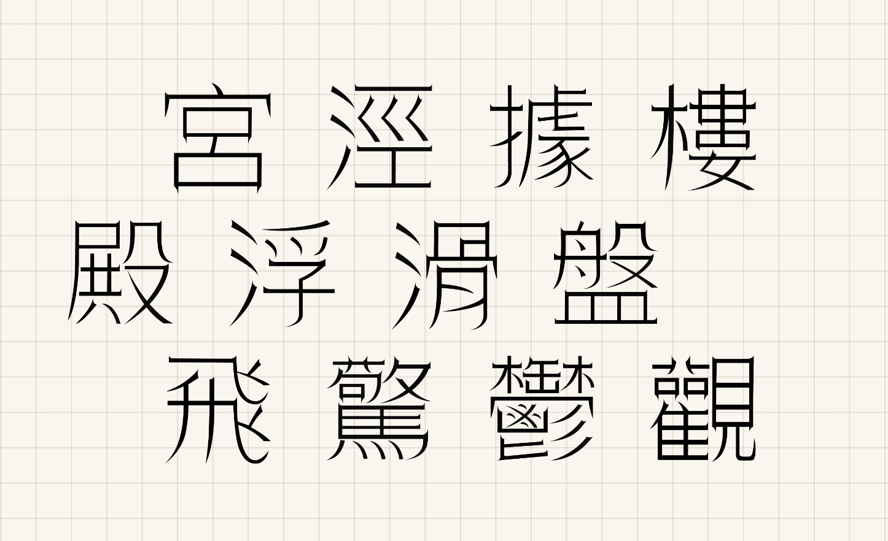

專注於視覺排版與資訊設計。 擅長將複雜資訊轉化為易讀的視覺介面，曾執行平面書籍到數位電商品牌。 設計軟體：Illustrator · Photoshop · InDesign · Procreate · Canva AI協作工具：Google Antigravity, Cursor, Gemini, Chat gpt 前端網頁基礎：RWD 響應式網頁設計, HTML/CSS

電商平台 · 網頁美編
專題製作 · 資訊圖表與書籍設計

字體設計
平面設計 · 伴手禮盒包裝
影片剪輯 · 農業知識科普動畫